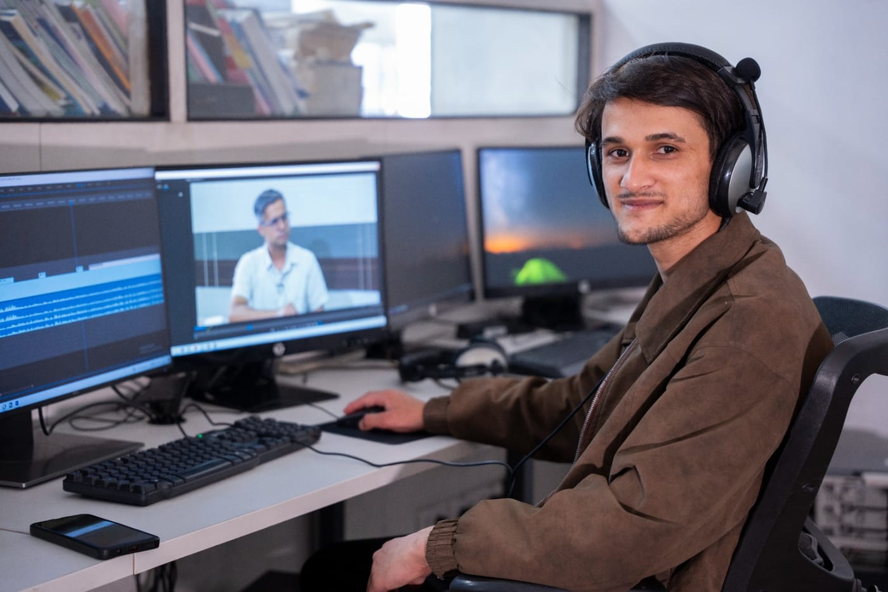

01समाचार
ब्रोडकास्ट एडिटिङ
समाचार प्याकेज
समाचारका लागि स्पष्ट, सटीक र आकर्षक कथावाचन।
- दैनिक टर्नअराउन्ड
- प्रसारण डेलिभरी
कान्तिपुर टेलिभिजनका भिडियो एडिटर / भिजुअल एडिटर। फुटेज, साउन्ड, ग्राफिक्स र टाइमिङ मिलाएर कथालाई स्पष्ट र मन छुने बनाउँछु।

म सुबास घिमिरे, कान्तिपुर टेलिभिजनमा भिडियो एडिटर / भिजुअल एडिटर।
समाचार र टक शो ढाँचामा काम गर्छु — फुटेज, साउन्ड, ग्राफिक्स र टाइमिङ मिलाएर हरेक कथा स्पष्ट र बुझिने बनाउँछु। धेरै दिन रश र डेडलाइनसँगै सुरु हुन्छन्, र अन्त्यमा प्रसारणयोग्य कट तयार हुन्छ।
यही गतिले पर्दामा नदेखिने कुरा सिकायो — कुन दुई सेकेन्ड राख्ने, ग्राफिकले कथा बोक्छ कि सजाउँछ मात्र, र साउन्डले दर्शकलाई एउटा शटबाट अर्कोसम्म कसरी लैजान्छ।
समाचारका लागि स्पष्ट, सटीक र आकर्षक कथावाचन।
सोचिएको गति, सफा कट र एकरूप कार्यक्रम शैली।
टाइटल, भिजुअल तत्व र सहयोगी ग्राफिक्स।
हरेक ढाँचा सुरुदेखि अन्त्यसम्म कसरी काटिन्छ — केस स्टडी पढ्नुहोस्। पूरा सोरिल अनुरोधमा उपलब्ध।
दैनिक प्रसारणका खण्ड — रशदेखि तयार सामग्रीसम्म, गति र स्पष्टताका साथ।
टाइटल, लोअर-थर्ड, टिकर र फुल-फ्रेम ग्राफिक्स — After Effects मा।
ग्रेडिङ, अडियो लेभलिङ र प्रसारणयोग्य बनाउने अन्तिम पास।
लामो सामग्रीका Shorts, Reels र भर्टिकल कट — फोन स्क्रिनका लागि।
काठमाडौंमा वा रिमोट — के चाहियो भन्नुहोस्।
भिडियो एडिटर · समाचार र टक शो
भिडियो एडिटर · टेलिभिजन
भिडियो एडिटर · टेलिभिजन
प्रोजेक्ट, फुटेज लिंक र डेडलाइन पठाउनुहोस् — इमेल वा WhatsApp मा। सामान्यतया एक दिनभित्र जवाफ दिन्छु। अंग्रेजीमा विस्तृत ब्रिफ फर्म पनि उपलब्ध छ।